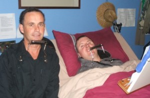

A free course designed for people with quadriplegia who cannot use their hands. The harmonica is played through a neck-mounted rack, which makes it one of the few instruments accessible to high-level injuries — and one of the most effective respiratory exercises available.
The full programme covers everything from your first clean note to playing along with a twelve-bar blues — respiratory technique, hands-free adaptations, a structured practice method, and demonstration videos. It is, and always will be, free.

Jeremy and Jarred
"Fantastic. It has been great for my diaphragm and each practice session has been a real workout."
— Jarred, hands-free harmonica student
— Jeremy, on the standard respiratory exercise prescribed after high-level SCI
A few years ago I realised something that could change a lot of lives for the better. After a high-level spinal cord injury, the muscles that drive your breathing — the diaphragm and the muscles between your ribs — get weak. Those are the exact same muscles that drive the harmonica. That weakness leaves you open to lung infections, which are still one of the leading causes of death after this kind of injury.
The harmonica is one of the very few instruments you can play entirely hands-free, in a neck-mounted holder. You need no musical knowledge to start. The holes are numbered. You can play sitting, reclining, or lying flat. And unlike blowing through a straw, it's actually enjoyable — and the more you enjoy it, the more you do it.
Here's the part nobody believes until they try it: you can sound good in days. Not years — days. And once you can make a sound, you've got back something this injury takes from a lot of people — a way to say the things that don't fit into words. Happy, angry, flat, fired up: it all comes out through the harp.
With the help of expert harmonica players — including Ben Hewlett — and people living with quadriplegia, I built a beginner course for anyone who wants to try.
Strengthening the breath and living longer is a by-product of having a good old-fashioned blast on the harp.
Incentive spirometry, balloon inflation, breathing through a straw — the standard respiratory exercises after high-level SCI are boring, repetitive, and easy to abandon. Adherence is the real problem, not effectiveness. The harmonica solves the adherence problem by being musical.
Here is the hard truth, said plainly: after a high spinal injury, the muscles that power your breathing get weak. Weak breathing muscles mean a weak cough. A weak cough means your lungs cannot clear themselves out — and that is how chest infections start. Chest infections are the thing most likely to put you back in hospital. This is worth taking seriously.
Playing the harmonica means drawing air in (draw notes) and pushing it out (blow notes), over and over, in rhythm. Every phrase is a small workout for the exact muscles your physiotherapist wants you to train. A three-minute song is several hundred breaths of different sizes and strengths — far more interesting than counting reps on a breathing gadget.
Playing the harmonica to build breathing strength has been studied in people with lung disease, and more recently in spinal cord injury. The research on injury specifically is still growing, so I will not oversell it — but the logic is solid: it works the right muscles, it makes you pull against resistance, and it tells you instantly when your breath control is good, because it sounds good. Programmes such as Harmonicas for Health already use this in hospitals around the world.
Important: this programme does not replace your breathing physiotherapy. If you have a tracheostomy, a phrenic nerve pacemaker, or you use a ventilator that affects how you move air at your mouth, talk to your respiratory team before you start. This one matters — please do not skip it.
A spirometer gives you a number. A harmonica gives you a note, a phrase, a song. When the exercise produces music that you and the people around you want to hear, compliance stops being the bottleneck.
The instrument also provides natural progression. A beginner trains shallow, controlled breaths on simple melodies; an intermediate player draws deeper, holds notes longer, and bends pitch — which requires even finer breath control. The exercise scales with your lungs.
The entire programme requires two pieces of equipment. Total cost is around $30–50. A carer or family member will need to help you get set up the first few times — after that, most players can stay set up for the duration of a practice session without further assistance.
Each video below walks you through one part of the hands-free method. Start with video one and work through them in order. All videos are hosted on YouTube — play them at full screen, rewind as often as you need, and try each step immediately with your own harp.
Standard harmonica technique assumes you are cupping the instrument with both hands — controlling tone, vibrato, and wah effects with hand movement. Hands-free players use different tools to achieve the same musical results. None of these adaptations compromises the core sound of the harp.
You will get better much quicker if you build good practice habits early. The harmonica rewards focused, mindful practice far more than mechanical repetition. This section gives you the framework I use and recommend — adapted from years of teaching and from working with players who have gone from absolute beginner to performance-ready.
Sometimes you are going to feel untalented and incompetent — when nothing sounds right and you want to give up. Don't be disheartened. No matter how good you get, you will always find something else to frustrate and then delight you. This is when you push through, and when the rewards arrive that the few have earned.
Every learner hits this wall: the notes are clean, your breath is steady, you are on the right holes — and it still does not sound like music. This is normal. It even has a name. It is the gap between playing notes and playing real phrases, and it is where most people get stuck and give up. These two exercises walk you across it. No hands needed. Works just as well lying in bed as sitting at a table.
Every harmonica player who ever sounded good learned by stealing phrases from someone they admired. There is no shortcut and no shame in it. The reason this works is that you skip the hardest part — inventing musical phrases — and instead practise deploying them. Invention comes later, naturally, once your ear is full of good material.
Below are ten phrases I have transcribed from the masters and recorded for you to learn. Each is short. Each was written by someone whose name is on the recording. Each will sound like music every time you play it, because it already is music.
Spend one week on each phrase. Ten phrases over ten weeks gives you a working vocabulary — enough to start dropping them into a slow blues and have something real to say.
One line per phrase, in a notebook, a phone note, a Google doc — the format does not matter. Write down what player it came from, when you learned it, and what feeling it carries for you. After ten phrases this becomes a personal artefact that proves you are a player. After fifty it is a record of how your ear has grown.
The act of naming each phrase — "the falling Sonny Boy phrase," "the long Adam Gussow bend" — is what turns a row of notes into a musical object you own.
Listening is part of practising, right from day one. These are the players and teachers I point people to most — working professionals who are active online and worth following right now.
Find a phrase you love? Slow it down and copy it. That's how every harmonica player who has ever lived learned — by listening to someone great and taking what they did. No shortcut, nothing to feel bad about.
The course is free. The equipment costs around $40. The first clean note is somewhere between five minutes and a few days away. Get in touch if you would like help getting started, want to share your progress, or have questions about the programme.